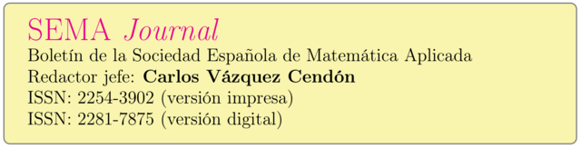

Índice del Volume 80, Issue 2, June 2023 de SEMA Journal
A novel approach for multi dimensional fractional coupled Navier-Stokes equation, S. Kumbinarasaiah, 261-282.
Uniform stabilization for a Timoshenko beam system with delays in fractional order internal dampings, Ahmed Adnane, Abbes Benaissa & Khalida Benomar, 283-302.
On exact solutions of some important nonlinear conformable time-fractional differential equations, Erdoğan Mehmet Özkan & Ayten Özkan, 303-318.
Extended convergence ball for an efficient eighth order method using only the first derivative, Ioannis K. Argyros, Debasis Sharma, Christopher I. Argyros, Sanjaya Kumar Parhi & Shanta Kumari Sunanda, 319-331.
A new class of derivative-free root solvers with increasing optimal convergence order and their complex dynamics, Janak Raj Sharma, Sunil Kumar & Harmandeep Singh, 333-352.
Monotone methods in counterparty risk models with nonlinear Black-Scholes-type equations, Bénédicte Alziary & Peter Takáč, 353-379.
Large time asymptotics for Fermi-Dirac statistics coupled to a Poisson equation, Lanoir Addala, 381-391.
Existence and blow up of solutions for a Petrovsky equation with variable-exponents, Taklit Hamadouche, 393-413.
Development of cubically convergent iterative derivative free methods for computing multiple roots, Sunil Kumar, Deepak Kumar & Rakesh Kumar, 415-423.
An N-dimensional elastic/viscoelastic transmission problem with Kelvin-Voigt damping and non smooth coefficient at the interface, Mohammad Akil, Ibtissam Issa & Ali Wehbe, 425-462.
On constrained set-valued optimization problems with ρ-cone arcwise connectedness, Koushik Das, 463-478.
A modified conjugate gradient parameter via hybridization approach for solving large-scale systems of nonlinear equations, Mohammed Yusuf Waziri, Aliyu Ibrahim Kiri, Abdullahi Adamu Kiri, Abubakar Sani Halilu & Kabiru Ahmed, 479-501.
Inertial extrapolation method with regularization for solving a new class of bilevel problem in real Hilbert spaces, Francis Akutsah, Akindele Adebayo Mebawondu, Godwin Chidi Ugwunnadi, Paranjothi Pillay & Ojen Kumar Narain, 503-524.
Correction to: Dynamical analysis and encryption key-distribution application of new q-deformed reduced Lorenz system, A. Elsonbaty, Sanaa M. Salman, A. Aldurayhim, N. F. Abdo, E. A. Hagras & A. A. Elsadany, 525.
Finite difference schemes for the parabolic p-Laplace equation, Félix del Teso & Erik Lindgren, 527-547.
Theory and methods for random differential equations: a survey, Marc Jornet, 549-579.
GLS methods for Stokes equations under boundary condition of friction type: formulation-analysis-numerical schemes and simulations, J. K. Djoko & J. Koko, 581-609.
Sequential optimality conditions of approximate proper efficiency for a multiobjective fractional programming problem, Mohamed Bilal Moustaid, Mohamed Laghdir & Issam Dali, 611-627.
Analysis and numerical computation of a fractional order mathematical model of testosterone secretion in humans, Oluwatayo Michael Ogunmiloro, 629-645.
Note on the stabilization of a vibrating string via a switching time-delay boundary control: a theoretical and numerical study, Kaïs Ammari, Boumediène Chentouf & Nejib Smaoui, 647-662.
On the convergence of Newton-like MS method with dynamics and applications, Manoj K. Singh, B. R. Singh & Deepak Kumar Mishra, 663-686.
A robust stability criterion on the time-conformable fractional heat equation in a axisymmetric cylinder, R. Temoltzi-Ávila, 687-700.